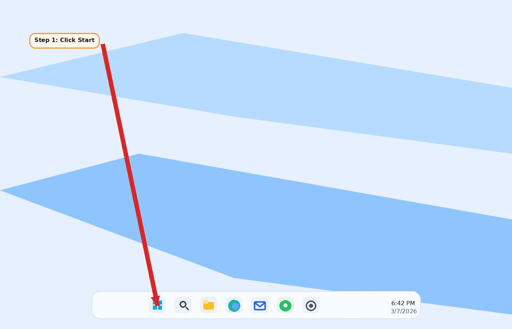
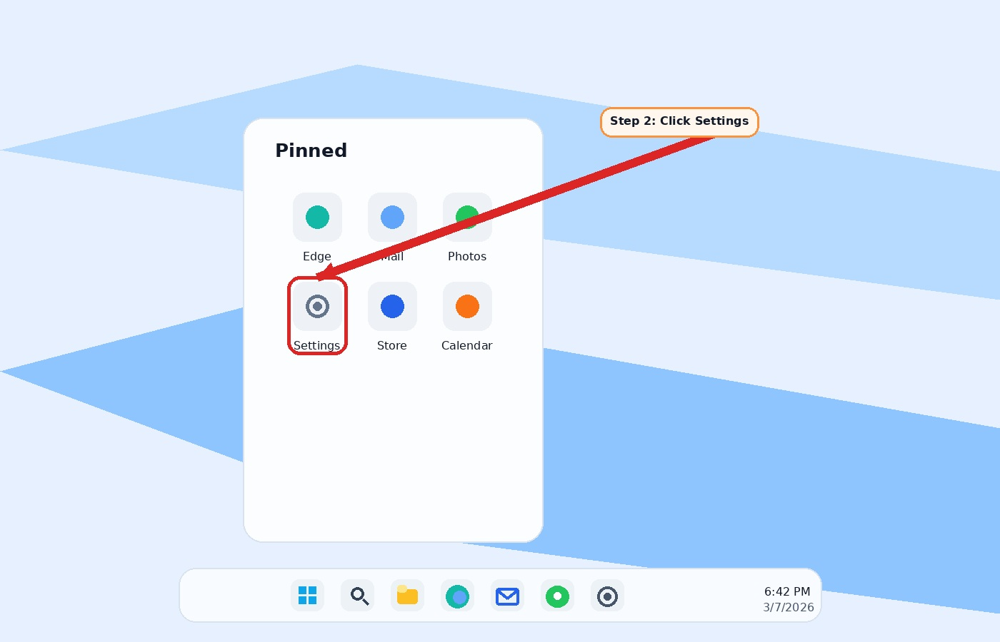
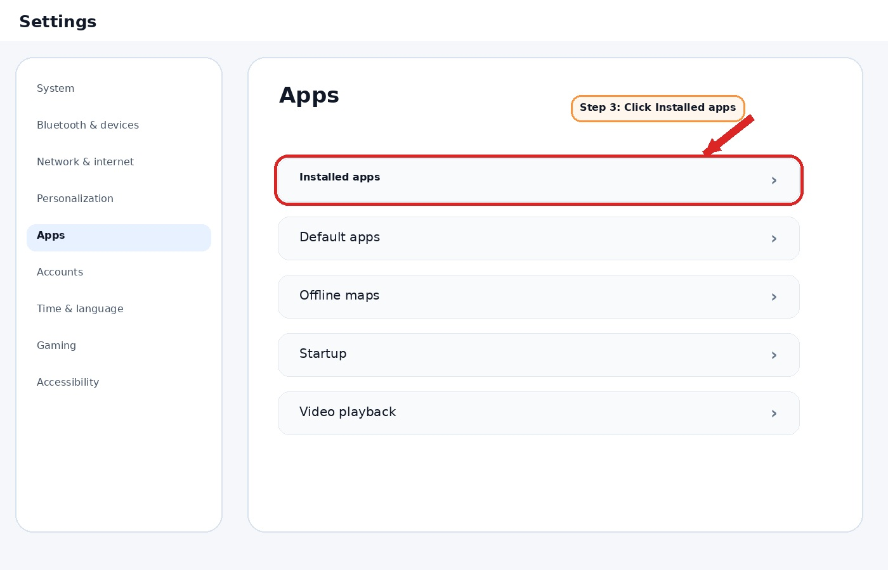
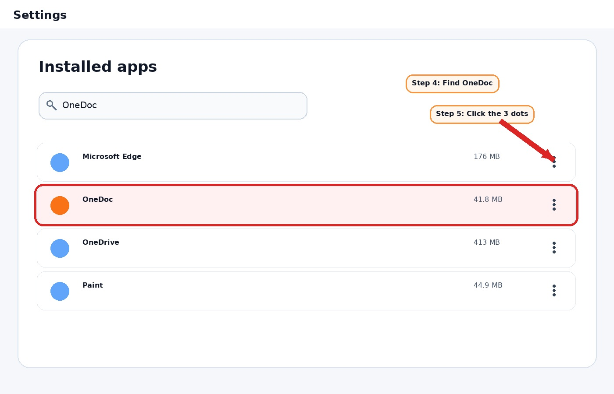
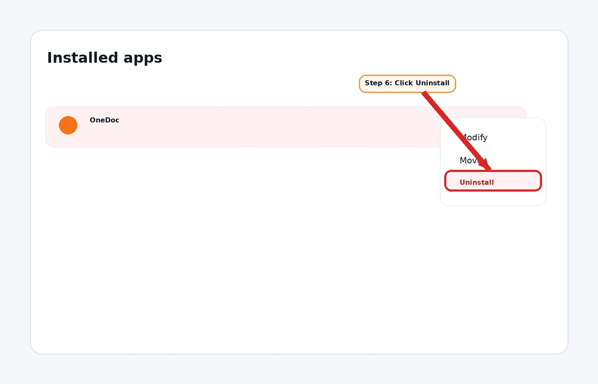
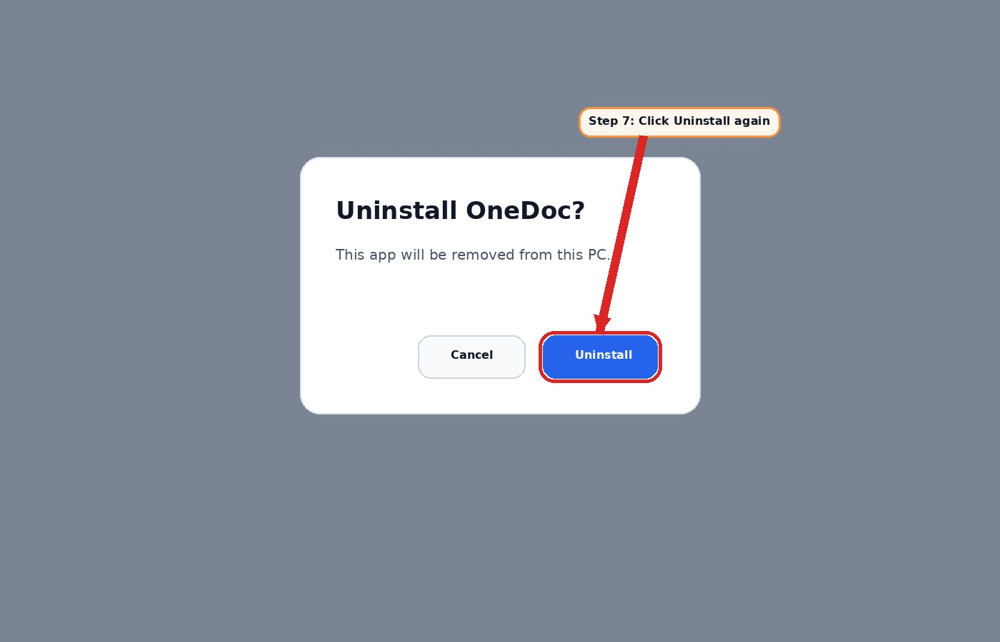
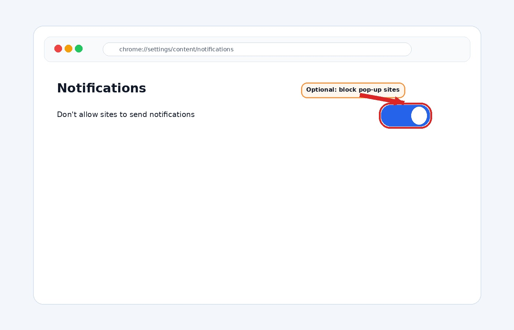

Big, simple steps for Windows 11.
Tell her: “Look at the bottom middle of the screen and click the Windows button.”

Tell her: “A menu popped up. Click the gear that says Settings.”

Tell her: “On the Settings page, click Installed apps.”

Tell her: “In the app list, look for OneDoc.”

If she does not see it right away, scroll slowly.
Tell her: “Click the 3 little dots next to OneDoc.”

Tell her: “A box popped up. Click Uninstall.”

If ads still show up, open Chrome and turn off bad notification sites.
